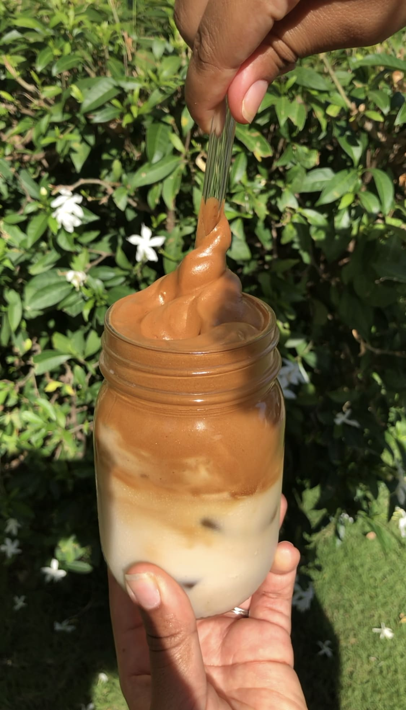

Our Roots

Bean & Bloom began with a simple idea: that coffee should be a force for good. We started as a small cart at local farmer's markets and eventually grew into the neighborhood coffeehouse you see today. Our focus has always been on quality over quantity.
We source every bean through direct-trade relationships, ensuring that farmers are paid fairly and our environmental impact is minimized. When you drink our coffee, you're supporting a chain of sustainability that starts in the soil and ends in your cup.
Lessons Learned (Reflection)
Building this website taught me that a solid plan is the secret to good design. I quickly realized that I needed to organize my CSS properly before getting too deep into the HTML. One of my biggest hurdles was getting the navigation menu to look right. It took some trial and error to make the hover effects feel smooth while sticking to the Bean & Bloom color palette, but mastering pseudo-classes made a huge difference. I also gained a new appreciation for accessibility; adding meaningful alt text isn't just a box to check, it’s about making sure everyone can enjoy the site.
When I tested the site on different browsers and my phone, it was eye opening to see how the layout shifted. Making the menu table readable on a small screen forced me to really think about contrast and hierarchy. Throughout this course, I’ve learned how to turn a flat brand palette into a functional, professional space. While I’m excited to try more advanced tools like CSS Grid in the future, I’m proud of how I used simple, clean layouts to create a site that feels cohesive and easy to navigate for any visitor.